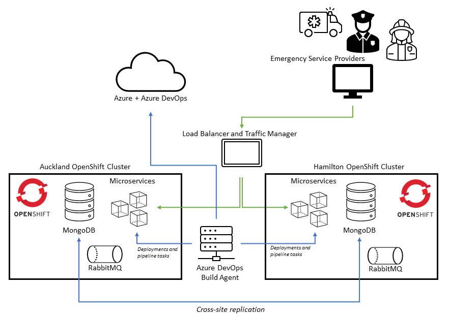

Emergency Caller Location Information
Tim Higgs / ECLI Solutions Architect / MBIE
A journey through what ECLI is,
what we have designed and built and why,
and some challenges we have overcome
About Me
- BSc Comp Sci, BA Philosophy Victoria University
- 25+ years in web application development
- 3 1/2 years as a Solutions Architect at MBIE on ECLI including DevOps CI/CD and K8s/OCP development
- Interests in the blending of technology with design, adventure travel (including skiing, diving and
motorbiking) and music
Introduction
- Every year millions of emergency calls are made in New Zealand and being able to ascertain
the location of an emergency is critical to enable emergency service to
best help those in need
- These days most people have a mobile device on them capable of providing accurate location; currently
84% of 111 calls originate from a mobile (16% from landlines) which works out to around 1.3 million
genuine calls on mobile networks
- Leverage that for ascertaining location
Emergency calls are often times of great stress.
- Additionally, people may not know where they are (there have been instances of hikers lost in remote
locations)
- There are frequent instances of people being unable to speak during a call (such as instances of
domestic violence and injury)
- There are times when people hang up before there’s been a chance to get their location from them
(such as depressive or suicidal calls).
What is ECLI?
- Project developed within Ministry of Business, Innovation and Employment as part of the
Government's Communications portfolio
- Receives and processes mobile location information when an emergency (111) call made
from a mobile device over a cellular network details and makes the likely
location of the caller available to authorised emergency service providers
- This helps them respond to emergencies as quickly as possible.
Emergency Service Providers
- New Zealand Police
- Fire and Emergency New Zealand
- St John and Wellington Free Ambulance
ECLI saves lives by
decreasing the time taken to verify location and
reducing the average incident dispatch time
ECLI Background
- An inital build of the service originally deployed in 2017
- In 2019 ECLI undertook a redesign + rebuild for greater flexibility, to leverage containerisation
and incorporate modern DevOps practices along with a suite of automated regression tests
- This new system successfully went live in October 2021 and the new platform has realised the rebuild goals
High availability is
essential
as ECLI is a critical service
Why Containerisation?
- Containerisation promotes component delineation and supports a scalable microservices architecture
- Leverage CI/CD integration
- Safer releases when deploy a service update independent of
others
- Running the same service & bundled runtime anywhere helps testing and deployment
- Zero downtime with rolling deployments with multiple containers per microservice
Why Kubernetes?
- Also for its flexibility, portability and provision of PaaS for containers
- Very widely used and great longterm solution - represents the future
- Network policies and RBAC allow multiple locked down, segregated environments on a single cluster
- IaC empowers developers through access to networking etc and makes many things possible including ease
of standing up new environments
Why DCSG Govt.Container?
- Managed Datacom OpenShift offering for Govt clients providing
- Multiple data centres for high availability and DR with low latency between Auckland and Hamilton
- Ease of integration with other existing ECLI components already in DCSG with onshore support
- OpenShift provides K8s-compatibility and native support for Helm
- Ease of integration with Microsoft Azure DevOps and deployment of ADO build agents within DCSG
infrastructure and network
Constraints: what makes things harder?
- Partial “air gap” due to security
- Locked-down environment via multiple layers of access
- Bandwidth constraints
- Some required network messaging protocols, such as for 3G mobile, aren’t supported with public
cloud
- Managed service means full admin not possible
Architecture details
- Backbone services, including integration into mobile network operators
- Vodafone, 2Degrees and Spark
- Supporting DCSG infrastructure for network connections and also VMs to facilitate DevOps
- Container platform provided by OpenShift
- Azure for DevOps and some cloud services
Core ECLI Containerised Services
- Containerised microservices with APIs built in .NET on Linux
- Containerised message bus (RabbitMQ) with high-availability
- Containerised NoSQL MongoDB database for short-lived, schema-less data with high-availability
Azure DevOps
- Pipelines for build, release and repeatable tasks (e.g. failover)
- Azure build agents allow a more secure model of running behind firewalls and reaching out for jobs
- Integration with Azure services such as Git, KeyVault and Container Registry
- Wrap scripts running on VMs in pipelines
High-Level Architecture Overview of ECLI

MongoDB
- Replication for HA within a cluster/environment
- Stretch cluster across data centres
- Standby MongoDB replica to allow quorum in a data centre
- Stretch cluster across data centres
Helm
- The package manager for Kubernetes
- Charts represent a bundle of K8s/OCP manifests and container image references
- Charts can contain upstream subcharts
- Deployment mechanism allows allows easy install and upgrade into a container platform
Helm Continued
- OO design - clean naming for clear delineation between microservices
- ECLI treat charts as “applications” bundles
- This smaller "application" bundle split gives us installation flexibility: same OCP
project, different projects, multiple times in the same project or different clusters
Why Helm vs an Operator?
- Reduced complexity
- Was more common at rebuild outset and ECLI had team familiarity with it
- Some use-cases better suit Helm; we can install multiple times in a single project and we have
leveraged "inheritance" through subcharts
- Easier for CI/CD
- Container registries support chart storage
Environments
- Test and Stable on ARO
- SIT and PROD on Govt.Container
Namespaces, networking and RBAC
- SIT and PROD
- Delineation between roles such as developer and support along with service accounts for secure
deployment
- Network policies to enforce separation and the ability for developers to be in control
Challenges
Some challenges and issues we have faced
- Deployment of lots of new container images as well as patching of our clusters has meant throttling
of our bandwidth and slow image pull times
- Lack of insights into failures of individual components (especially when not presenting as complete
outage) requiring monitoring
- Integration into automated alerting ticketing system
- Inter-data centre connection outage leading to MongoDB disruption
Reliability through Availability
Multiple Clusters
- Addtional dev/test cluster (Azure ARO) - greater control and allows testing of upgrades
- For resiliency and high availability we have 2 geographically separated prod OCP clusters
- Sometimes backbone connections (including MNOs) into a data centre need to be taken down for upgrades etc. having the 2 clusters
allows quick failover to be done
- F5 with global traffic management
Failover
- DNS strategy with short TTL
- Ability to trigger failover via ADO pipeline that takes a few seconds to run
- Promotion of new MongoDB primary and demotion to standby
- Quick failover between them with a LIVE/NONLIVE setup
- Ability for NONLIVE deployments and smoke testing prior to LIVE deployment
- Manual and automated failover
- Automated detection of LIVE not being healthy and NONLIVE promoted
- DNS change and MongoDB primary shifted to new LIVE data centre environment
Container Registry
- Container registry solution within each cluster to facilitate quick image pulls and remove external Azure cloud
dependency
- Improve container image delivery for constrained bandwidth and reduced risk with dependency on
external cloud-hosted registry
- Custom Helm chart that incorporates a Docker registry as well as image synchronisation script
using Skopeo run as a CronJob and images stored on a PVC
Monitoring and alerting
- Dynatrace - cloud-hosted service and OCP operator
- Integration with ticket management for 24/7 support
- Alert profiles based upon certain observed errors etc
Realised benefits of the new platform
- Great uptime
- Safe deployments that are easy and repeatable
- Automated test suite
- Automated container image rebuilding for patching
- Enhanced security through DevSecOps such as container image scanning
- Scalable platform for adding new applications
- Ongoing ECLI service certification (changes & new applications) is helped by certified PaaS
Next: R&A Data Science application
- We require a lot of analysis over our data to help provide insights, troubleshoot
potential issues & provide reports
- We are replatforming this Data Workshop application onto OpenShift so it
can work securely with various data sources and provide a flexible platform
for data scientists/engineers to
work with the tools that they need and want
Details
- Containerised workloads such as Apache Airflow and Postgres
- Apache Airflow provides workflow engine
- Integration with PowerBI for reporting
Future
The service has become a critical component of the emergency response system, significantly
contributing to improving public safety outcomes and saving lives of New Zealanders.
With anticipation of a higher number of emergency calls being made over new technologies, including
5G, and Voice over Wi-Fi, ongoing enhancements to the Service will ensure it remains current.
Further details/references:
- [ ]